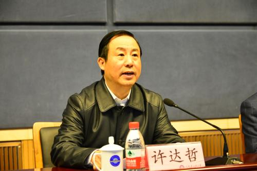

11月16日上午，湖南省质量大会在长沙召开，7家企业、1名个人荣获第六届省长质量奖。省委副书记、省长许达哲为上述获奖企业和个人颁奖并讲话。他强调，要深入贯彻党的十九届五中全会和习近平总书记考察湖南重要讲话精神，坚持质量第一、质量致胜，加快建设质量强省，推动全省高质量发展，奋力谱写新时代坚持和发展中国特色社会主义湖南新篇章。
副省长何报翔主持会议，副省长朱忠明宣读表彰决定。省政府秘书长王群出席。
经审核评议，中车时代电动汽车股份有限公司、衡阳市建衡实业有限公司、湘潭市恒欣实业有限公司、金杯电工股份有限公司、湖南艾华集团股份有限公司、湖南建工集团有限公司、湖南快乐阳光互动娱乐传媒有限公司7家企业以及中南大学湘雅二医院向大雄荣获第六届省长质量奖；湘村高科农业股份有限公司等8家企业荣获第六届省长质量奖提名奖。会上，湖南艾华集团代表获奖企业和个人发布《质量宣言》。
“我在航天系统和国防工业系统工作多年，深深体会到质量就是政治、质量就是生命、质量就是效益。对市场主体来说，质量是市场、是竞争力。”许达哲充分肯定近年来全省质量工作成效。他强调，要把质量提升作为构建现代产业体系、推动经济体系优化升级的重中之重，把确保质量安全作为建设服务型政府、完善政府治理体系的突出任务，把建设质量强省作为全社会的自觉行动，把质量工作放到贯彻新发展理念、构建新发展格局的突出重要位置抓紧抓好，在质量强国建设中展现湖南作为。
许达哲强调，要聚焦打造“三个高地”，全面加强质量品牌建设，以高质量供给推动高质量发展。聚焦打造国家重要先进制造业高地，全面开展质量提升行动，推动制造业转型升级；聚焦打造具有核心竞争力的科技创新高地，狠抓重要产品和关键核心技术攻关，解决制约产业质量的“卡脖子”问题；聚焦打造内陆地区改革开放的高地，在质量管理、标准制定等领域全面参与国际合作，锻造一批世界和全国知名的湖南品牌；聚焦服务构建新发展格局，着力提高农产品优质供给水平，推动生产性服务业向专业化、高端化转变，促进生活性服务业向精细化、高品质提升，加快消费品增品种、提品质，提升供给体系对内需的适配性。要着力锻长板、补短板、强弱项，强化质量技术支撑，大力推进标准化建设，狠抓品牌建设，抓好劳动者技能提升，保障重点工程质量，全面筑牢质量工作基础。

湖南文化产业网版权所有 (c) All Rights Reserved.
未经湖南文化产业网书面特别授权，请勿转载或建立镜像